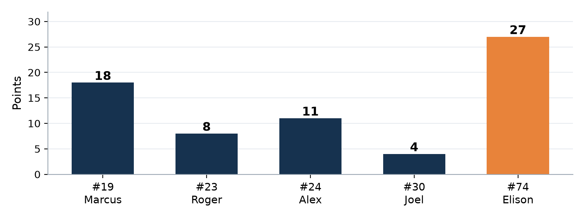
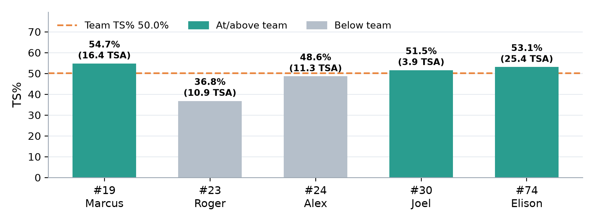
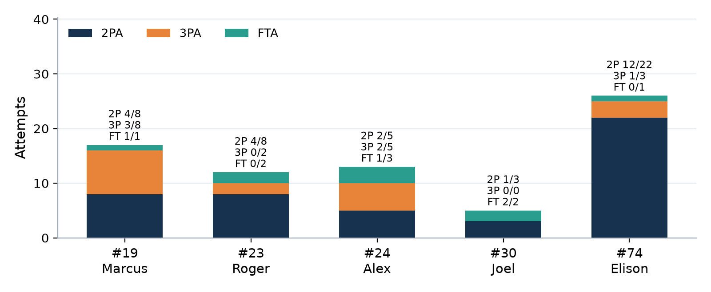
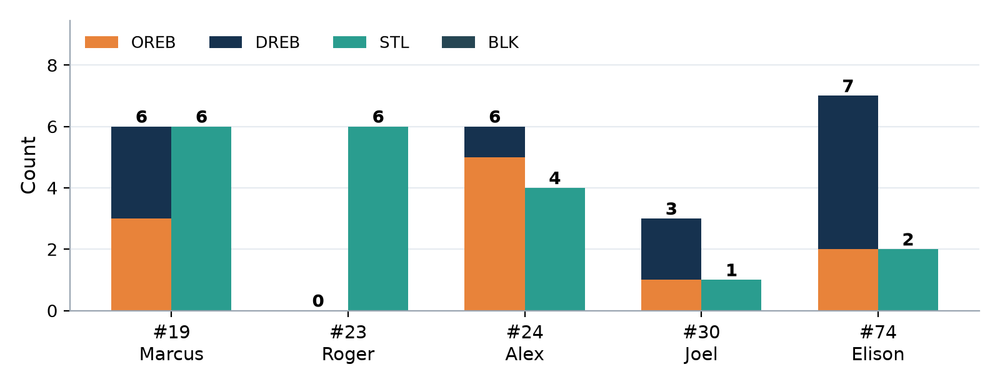

Player Game Report
| 63 | – | 34 |
| GD Ruse30 | The Wolves |
Box score analysis · Compared with earlier games where available
1The game at a glance
Three big messages
- PPP 1.06 (0.98 on the official 63), TS% 50.0%, 2P 23-46 (50%, up from 28.6% last game).
- 14 AST vs 7 TO (AST/TO 2.00): we doubled our assists and cut turnovers from 11 to 7.
- 19 steals (Marcus 6, Roger 6, Alex 4), more than double last game, and only 4 fouls.
- The Wolves scored 34, about 0.53 points per possession.
- FT 4-9 (44.4%), and we got to the line less (FT rate 14.1%, down from 23.4%).
- Only 11 DREB (down from 16): we let them have second chances.
2How we played as a team
| Stat | 9 Sep Honey Badgers | 16 Sep The Wolves |
|---|---|---|
| Points (box score) Sum of player points | 46 | 68 |
| PPP Points per possession | 0.90 | 1.06 |
| TS% / eFG% Shooting efficiency | 44.4% / 43.6% | 50.0% / 50.0% |
| 2P Shots inside the arc | 10-35 (28.6%) | 23-46 (50.0%) |
| 3P Shots behind the arc | 7-12 (58.3%) | 6-18 (33.3%) |
| FT · FT rate Free throws · trips to the line per shot | 5-11 (45.5%) · 23.4% | 4-9 (44.4%) · 14.1% |
| AST · TO · AST/TO Good passes vs giveaways | 7 · 11 · 0.64 | 14 · 7 · 2.00 |
| TO rate Share of possessions lost to a turnover | 21.6% | 10.9% |
| OREB · DREB Offensive · defensive rebounds | 12 · 16 | 11 · 11 |
| OREB ÷ our misses Misses we got back | 40.0% | 31.4% |
| STL · BLK Steals · blocks | 9 · 0 | 19 · 0 |
| PF Personal fouls | 7 | 4 |
| Opponent PPP (est.) Our defence | 0.57 | 0.53 |
- 68 points (box score) from 64 shots: PTS/FGA 1.06, eFG% 50.0%, TS% 50.0%, our best shooting so far. 3PT 6-18 (33.3%) is worth the same as 50% on twos.
- Finishing inside improved a lot: 2P 50.0% (23-46), up from 28.6%. Elison went 12-22 inside.
- Ball care and passing: 14 AST, 7 TO. Nearly half our baskets (48%) came from a pass, and the TO rate fell to 10.9%.
- Defence: 19 STL, 0.53 opponent PPP, 4 PF. Rebounding was our weak spot: 22 REB (11 O / 11 D), the lowest of the season so far.
- Only 5 players have stats (#7, #17 no record), so the load was heavy: Elison 25 shots, Marcus 16.
- Ball movement: 14 AST, AST/TO 2.00
- Steals: 19 (three players with 4+)
- Finishing: 2P 50%
- Discipline: only 4 PF
- Free throws: 4-9 (44.4%); FT rate 14.1%
- DREB: only 11
- Roger 0 REB; most rebounds came from 3 players
This was our best all-round game: we shared the ball, finished inside and turned defence into offence. The next step is to make free throws, get to the line more, and finish defensive stops with a rebound.
BFull box score
Exactly as transcribed from the official box score. Tap a name for that player's page.
| Player | PTS | FG | 2P | 3P | FT | OREB | DREB | REB | AST | STL | BLK | TO | PF |
|---|---|---|---|---|---|---|---|---|---|---|---|---|---|
| #7 Hanze | no recorded stats | ||||||||||||
| #17 Ryan | no recorded stats | ||||||||||||
| #19 Marcus | 18 | 7-16 | 4-8 | 3-8 | 1-1 | 3 | 3 | 6 | 4 | 6 | 0 | 3 | 1 |
| #23 Roger | 8 | 4-10 | 4-8 | 0-2 | 0-2 | 0 | 0 | 0 | 2 | 6 | 0 | 1 | 3 |
| #24 Alex | 11 | 4-10 | 2-5 | 2-5 | 1-3 | 5 | 1 | 6 | 5 | 4 | 0 | 1 | 0 |
| #30 Joel | 4 | 1-3 | 1-3 | 0-0 | 2-2 | 1 | 2 | 3 | 1 | 1 | 0 | 1 | 0 |
| #74 Elison | 27 | 13-25 | 12-22 | 1-3 | 0-1 | 2 | 5 | 7 | 2 | 2 | 0 | 1 | 0 |
| Team (box score) | 68 | 29-64 | 23-46 | 6-18 | 4-9 | 11 | 11 | 22 | 14 | 19 | 0 | 7 | 4 |
Score check The player rows add up to 68, but the official result is 63–34. We show the box score exactly as recorded; see the score check.
3Charts




- Elison carried the scoring, with Marcus as a strong second option.
- Steals came from everyone: 19 in total.
- Rebounding was our weakest number.
4Team: what to look for in the next games
Same team targets every game. Here's how we've done so far:
| Team target | 9 Sep | 16 Sep | |
|---|---|---|---|
| PPP (points per possession) | ≥ 0.95 | 0.90 ✗ | 1.06 ✓ |
| TS% (true shooting) | ≥ 48% | 44.4% ✗ | 50.0% ✓ |
| 2P% (finishing inside the arc) | ≥ 45% | 28.6% ✗ | 50.0% ✓ |
| FT% (free throws) | ≥ 60% | 45.5% ✗ | 44.4% ✗ |
| Turnovers (TO) | ≤ 8 | 11 ✗ | 7 ✓ |
| AST/TO | ≥ 1.00 | 0.64 ✗ | 2.00 ✓ |
| Personal fouls (PF) | ≤ 12 | 7 ✓ | 4 ✓ |
| Steals (STL) | ≥ 8 | 9 ✓ | 19 ✓ |
| Offensive rebounds (OREB) | ≥ 8 | 12 ✓ | 11 ✓ |
| Defensive rebounds (DREB) | ≥ 15 | 16 ✓ | 11 ✗ |
| Opponent PPP (est.) | ≤ 0.65 | 0.57 ✓ | 0.53 ✓ |
| Targets hit | 5 / 11 | 9 / 11 |
| What to look for | This game | Next-game goal |
|---|---|---|
| FT% | 4-9 (44.4%) | ≥ 60% |
| FT rate (FTA ÷ FGA) | 14.1% | 20%+ |
- At the line: same routine every time, and follow through.
- If your three isn't open, attack the basket: contact means free throws.
| What to look for | This game | Next-game goal |
|---|---|---|
| Defensive rebounds | 11 | ≥ 15 |
| Total rebounds | 22 | 26+ |
- When their shot goes up, find a body and box out first.
- Guards rebound too: long shots mean long rebounds.
| What to look for | This game | Next-game goal |
|---|---|---|
| Assists | 14 | 10+ |
| Turnovers | 7 | ≤ 8 |
| Steals (keep it!) | 19 | ≥ 8 |
- Make the extra pass: it worked this game.
- Keep reading passing lanes for steals, but don't gamble on the dribbler.
5Your player card
Find your card and compare yourself with the Team row. Usage share = how much of the team's offence ends with you (equal split here ≈ 20.0%).
| Player | PTS | FG | TS% | REB | AST/TO | Stocks | PF | Usage |
|---|---|---|---|---|---|---|---|---|
| #19 Marcus | 18 | 7-16 | 54.7% | 6 | 4/3 | 6 | 1 | 25.9% |
| #23 Roger | 8 | 4-10 | 36.8% | 0 | 2/1 | 6 | 3 | 15.8% |
| #24 Alex | 11 | 4-10 | 48.6% | 6 | 5/1 | 4 | 0 | 16.4% |
| #30 Joel | 4 | 1-3 | 51.5% | 3 | 1/1 | 1 | 0 | 6.5% |
| #74 Elison | 27 | 13-25 | 53.1% | 7 | 2/1 | 2 | 0 | 35.3% |
| Team | 68 | 29-64 | 50.0% | 22 | 14/7 | 19 | 4 | 100% |
#7 Hanze, #17 Ryan: every column is zero in the box score. They most likely didn't play, or played only briefly without a recorded stat (minutes aren't recorded). That's not a judgement on anyone, so there's no card. The box score can't see screens, box-outs or talking on defence either.
- 18 PTS on TS% 54.7%; 3PT 3-8 (37.5%).
- 6 STL (joint team high) + 4 AST + 6 REB.
- Only 1 PF with all that defensive activity.
- 3 TO: better than 4, but you have 7 in two games.
- Only 1 FTA: with 16 shots, look to attack the rim more.
| What to look for | This game | Next-game goal |
|---|---|---|
| Turnovers | 3 | 2 or fewer |
| Free-throw attempts | 1 | 2+ |
| Keep: STL / AST | 6 STL · 4 AST | 3+ STL · 3+ AST |
- When you drive, jump stop before you decide: shoot or pass.
- Keep your 3-point shot in rhythm: feet set before the catch.
- 6 STL (joint team high): great anticipation.
- 4-8 inside the arc: a good bounce-back after 0-4.
- 2 AST, 1 TO.
- 0 REB: you need to help on the glass.
- 3 PF = 3 of the team's 4 fouls (3 PF in each game so far).
- FT 0-2, 3PT 0-2 (TS% 36.8%).
| What to look for | This game | Next-game goal |
|---|---|---|
| Rebounds | 0 | 3+ |
| Fouls (PF) | 3 | 2 or fewer |
| Keep: steals | 6 | 3+ |
- When a shot goes up, box out your player: rebounds are everyone's job.
- For steals, read the pass; don't reach at the dribble (that's where fouls come from).
- 5 AST, 1 TO: team-high assists.
- 5 OREB (6 REB): you gave us extra chances.
- 4 STL, 0 PF: busy and clean.
- FT 1-3 (2-6 over two games).
- 2P 2-5: inside finishing is still 3-13 over two games.
| What to look for | This game | Next-game goal |
|---|---|---|
| FT% | 1-3 | 2 of 3+ |
| 2P% (finishing) | 2-5 (40%) | 50% |
| Keep: AST / OREB | 5 AST · 5 OREB | 3+ AST · 3+ OREB |
- Near the rim, slow down one beat: two feet, then up strong.
- Keep crashing and keep making the extra pass.
- FT 2-2: a big step from 1-4.
- TS% 51.5%, 1 AST, 1 STL.
- 0 PF again.
- 3 REB (down from 8), and the team had only 11 DREB.
- Only 3 shots: be ready to finish and to ask for the ball inside.
| What to look for | This game | Next-game goal |
|---|---|---|
| Rebounds | 3 | 7+ |
| Shot attempts near the rim | 3 | 5+ |
| Keep: PF | 0 | ≤ 2 |
- On every shot, find a body, then the ball.
- Seal your defender and show a target with your hands.
- 27 PTS; 2P 12-22 (54.5%).
- Only 1 TO on a huge load (usage 35%).
- 7 REB, 0 PF.
- Only 1 FTA on 22 inside shots: go up stronger and draw contact.
- 2 AST: with defenders collapsing on you, there's room to find teammates.
| What to look for | This game | Next-game goal |
|---|---|---|
| Free-throw attempts | 1 | 3+ |
| Assists | 2 | 3+ |
| Keep: TO / 2P% | 1 · 54.5% | ≤ 2 · 50%+ |
- Use a shot fake near the rim: defenders jump, you get contact or an easy finish.
- When two come at you, kick it out: someone is open.
7Data notes
- Source: the official box score for this game only (no video, no minutes, no opponent stats). Every cell was transcribed and checked: player rows add up to the team totals, and for every player FGM = 2PM + 3PM, FGA = 2PA + 3PA, REB = OREB + DREB and PTS = 2×2PM + 3×3PM + FTM.
- Score difference: the box score totals 68 points, the official result is 63. We kept the box score for all stats; see the score check.
- Possessions are estimated (FGA + 0.44×FTA − OREB + TO), and opponent PPP assumes both teams had a similar number of possessions.
- Small samples: most of us took 3–16 shots, so one make or miss moves a percentage a lot. Look for patterns over several games, not one.
- Zero rows (#7 Hanze, #17 Ryan) are treated as "didn't play or no stats recorded". Nothing here judges those players.
- What a box score can't see: screens, box-outs, help defence, talking, effort. They matter, even though they don't show up here.
- Using your goals: pick one or two focus points from your card before each game, then check the box score afterwards. Small steps add up.
Every stat explained: Glossary